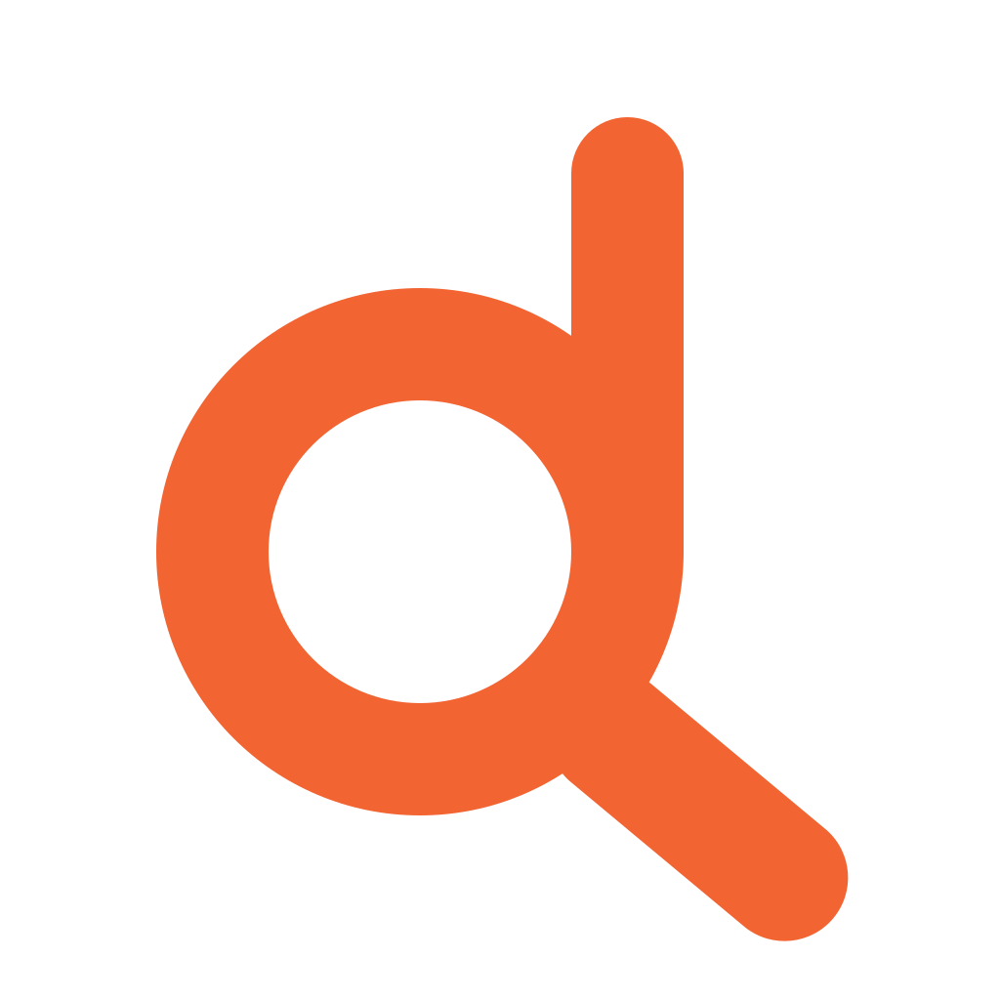

DoveFACT SHEET · NOVEMBER 8, 2026
Dove at a glance
A place-saving and planning app for deciding where to go together.
- Product
- Dove · pronounced “Dovay” · Brand styling: dove. · Tagline: WHERE TO?
- Launch
- November 8, 2026 · Download Dove on the App Store
- Platforms
- iPhone, iPad, Mac, and Apple Vision Pro. Requires iOS 26, iPadOS 26, macOS 26 (Apple M1 or later), or visionOS 26 or later.
- Purpose
- Save places, organize collections, create a shortlist, and choose together through a shared Plan. Participants vote Yes, Maybe, or No; the organizer chooses.
- Dove Plus
- Saving and exploring places are free. Dove Plus unlocks creating Plans. Invitees can join and vote without subscribing. Current local pricing, trial eligibility, and renewal terms are shown in the App Store and before purchase.
- Privacy
- No separate email signup. iCloud and CloudKit support personal data and chosen sharing. Limited product analytics use Mixpanel; Apple and RevenueCat handle purchases and subscription access.
- Intelligence
- Apple Intelligence availability depends on compatible devices, settings, language, and region. Supported workflows can use on-device processing and Private Cloud Compute.
- Maker
- Karan · Bridgetown App Studio · Portland, Oregon
- Media
- Original Dove mark, Header v2, and Search v3 artwork. Illustrative artwork uses generated people and fictional venues; it is not an untouched app screenshot or a restaurant endorsement.
Press contact: Karan · info@bridgetownappstudio.com